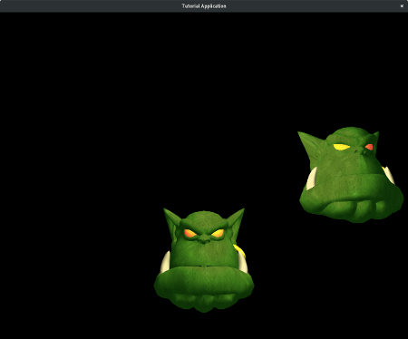

|
OGRE
13.6
Object-Oriented Graphics Rendering Engine
|
|
OGRE
13.6
Object-Oriented Graphics Rendering Engine
|
This first tutorial will cover the basic elements of building a scene in Ogre. The primary focus will be the Ogre::SceneManager, Ogre::SceneNode, and Ogre::Entity. An Entity is anything represented by a mesh. A Ogre::SceneNode is what attaches an object to your scene. Finally, the SceneManager is the object that organizes everything. It keeps track of the entities and nodes in your scene and determines how to display them.
We'll start with an explanation of some of the basic concepts in Ogre. Don't worry, this first tutorial has a little more explanation than the rest, but that changes very quickly once you get to the later tutorials. We will be building plenty of things. We just have to lay a little groundwork first, so you have somewhere to stand.
The full source for this tutorial can be found in samples directory Samples/Tutorials/BasicTutorial1.cpp.
We are going to provide a quick introduction to the basic elements of an Ogre scene.
Everything that appears on the screen is managed by the Ogre::SceneManager. The SceneManager keeps track of the locations and other attributes of the objects in your scene. The SceneManager also manages any cameras that you add to your scene. There are multiples types of SceneManagers. They differ in how they partition the scene for culling and searching nodes. There are managers implementing the Octtree scheme and others using portals. For now, you can use the default SceneManager, which is best suited for scenes where most of the objects are visible most of the time.
SceneNodes carry information that is used for all of the objects that are attached to it. An Entity is not rendered in your scene until it is attached to a SceneNode. In addition, a SceneNode is not a visible object in your scene. It only holds abstract information like location and orientation. Only when it is connected to something like an Entity is that information used to actually render something in the scene.
SceneNodes can have more than one object attached to them. We may want to have a light that will follow a character around in a scene. To do this, we could attach both the character Entity and the light to the same SceneNode. This will cause them both to share the same location information. We can even attach SceneNodes to other SceneNodes. This is useful in many circumstances. Imagine you have a character and you want to attach a tool to their hand. You wouldn't want to attach the tool to SceneNode for the entire character. Instead, you could attach a SceneNode representing their hand to the character's main SceneNode, and then attach the tool Entity to that "child" SceneNode. more complicated uses of SceneNodes will be covered in later tutorials.
One final thing to keep in mind about SceneNodes is that their position is relative to their parent SceneNode and each SceneManager creates a root Node to which all other SceneNodes are attached.
An Entity is one type of object that you can render in your scene. It is anything that is represented by a 3D mesh. Even terrain objects are very large entities. Lights, Billboards, Particles, and Cameras are examples of scene elements that are not entities. Ogre uses a well-known design pattern that separates renderable objects from information like their location. This means that you don't directly place an Entity into your scene. Instead, you place a SceneNode into your scene, then attach your Entity to that SceneNode. The Entity is then rendered using information taken from the SceneNode.
It's finally time to start building something in our scene. All source addition will be in "tutorial section" in cpp file of the tutorial TutorialApplication::setup method.
The first thing we want to do is turn on the lights.
The setAmbientLight method takes an Ogre::ColourValue. The three values represent the red, green, and blue values of the colour, and they range between 0 and 1.
scnMgr is a variable that is defined in OgreBites::ApplicationContext. There are a number of features available, like setting up resources and initialization of required routines for rendering. They will be introduced as we need them.
Lights will be covered in detail in the next tutorial, but we will still add a simple one to this scene as a teaser. New Light objects can also be requested from the Ogre::SceneManager. We give the Light a unique name when it is created.
Once the Light is created and attached to its SceneNode, we set its position. The three parameters are the x, y, and z coordinates of the location we want to place the Light.
Next step is to create a camera.
Details about camera will be covered in the following tutorial.
The next thing we do is ask the SceneManager to create an Entity.
The parameter given to this function must be a mesh that was loaded by Ogre's resource manager. For now, resource loading is one of the many things that OgreBites::ApplicationContext is taking care of for us. It will be explained further in later tutorials.
Now that we have an Entity, we need to create a SceneNode so the Entity can be displayed in our scene. Every SceneManager has a root node. That node has a method called createChildSceneNode that will return a new SceneNode attached to the root. In older versions of Ogre, you were required to provide a unique name for your Entities and SceneNodes. This is now optional. Ogre will generate names for them if you do not provide one.
We save the SceneNode pointer that is returned by the method so that we can attach our Entity to it.
We now have a basic scene set up. Compile and run your application. You should see an Ogre's head on your screen. This is only the beginning...

Before we go on, let's cover some basics of Ogre's coordinate system. Ogre, like many other graphics engines, uses the x-z plane as the "floor" in a scene. This means that the y-axis is the vertical axis to ensure Ogre is using a right-handed coordinate system

The x-axis starts with negative values to the left and increases to the right (passing through zero at the origin). The z-axis runs forwards and backwards. The positive direction of the z-axis points "out of the screen". So if a character walks towards the screen, then its z value will be increasing. Finally, the y-axis runs from the bottom to the top. Values that are "below ground" are negative. Don't take these terms in parenthesis literally. You can put the ground wherever you want. It is just to help you orient yourself in the scene.
When you run your application, notice how your Ogre head is facing towards the camera down the positive z-axis. This is a property of the mesh itself and the orientation of the camera. Cameras are covered in a later tutorial. The Ogre head is sitting at the origin of our world, (0, 0, 0). The direction the head is facing by default is a result of which way it was facing when it was originally modeled. You can effectively change this from within Ogre as well, but it will require some knowledge of quaternions, which aren't really covered until the Intermediate Tutorials.
Ogre uses a vector class to represent positions and directions. There are vectors defined for 2-4 dimensions. They are called Ogre::Vector2, Ogre::Vector3, and Ogre::Vector4 - Vector3 being the most commonly used by far. If you are not familiar with the concept of vectors it is highly recommended to learn a little before attempting these tutorials. Even though Ogre is an abstraction over many of the complications involved with OpenGL and DirectX, there is still no escaping some mathematical concepts. Vectors and basic linear algebra will be some of the most useful things you can learn if you intend to proceed with 3D rendering. This site has produced a nice primer on vectors focused on game programmers.
It's time to get back to the coding. With our first Entity, we did not specify the location we wanted anywhere. Many of the functions in Ogre have default parameters. The SceneNode::createChildSceneNode(external link) method can take three parameters, but we called it with none. The parameters are the name, position, and rotation of the SceneNode being created. We've already mentioned that Ogre generates a unique name for us. It also uses (0, 0, 0) as a default position.
First, let's move the camera so we can fit more Entities on screen. Place this call right after you set the ambient light in createScene:
Now, let's create another Entity and SceneNode, but this time we'll give it a new position.
This is the same thing we did the first time, except we are now providing a Vector3 to our createChildSceneNode method. This will override the default position. Remember, the SceneNode's position is always relative to its parent. In this case, the parent SceneNode is the root SceneNode, which is positioned at (0, 0, 0) by default.
Compile and run your application. Your Ogre head should have a buddy.

The Ogre::Entity class is very extensive. We will now introduce just a few more of its methods that will be useful. The Entity class has setVisible and isVisible methods. If you want an Entity to be hidden, but you still need it later, then you can use this function instead of destroying the Entity and rebuilding it later.
The getName method returns the name of an Entity, and the getParentSceneNode method returns the SceneNode that the Entity is attached to. In our case, this would be the root SceneNode.
The Ogre::SceneNode class is very complex. For now, we will only cover some of the most useful methods.
You can set the position after creating the node with setPosition. This is still relative to its parent node. You can move an objective relative to its current position by using translate.
SceneNodes are used to set a lot more than just position. They also manage the scale and rotation of objects. You can set the scale of an object with setScale. And you can use yaw, pitch, and roll to set the object's orientation. You can use resetRotation to return the object to its default orientation. Finally, you can use rotate to perform more complicated rotations. This will again involve the use of quaternions, which will not be covered until the Intermediate Tutorials.
We've already used the attachObject method of a SceneNode. There are few more methods that are useful for dealing with the objects that are attached to a SceneNode. You can use numAttachedObjects to return the number of children attached to your node. You can use one of the many versions of Ogre::SceneNode::getAttachedObject to retrieve one of the SceneNode's children. The method detachObject can be used to remove a specific child node, and detachAllObjects can be used to remove all.
Since the position of a child node is relative to its parent, it makes it very easy to move large groups of nodes together. For example, if we changed this line:
To this:
Then our new node would be parented directly to the SceneNode for our first Entity. This would mean that moving ogreNode would also move ogreNode2. It would also mean that the position of ogreNode2 would be relative to ogreNode.
If you're having trouble with the idea of a relative location, then maybe an example will help. Let's say we put our first node, ogreNode, at (10, 10, 10) and attach ogreNode2 directly to ogreNode. Then we set the position of ogreNode2 to be (-10, -10, -10). To figure out where ogreNode2 will be displayed we add its position to the position of its parent.
So this means that ogreNode2 would actually be placed at (0, 0, 0) in our world, even though we set its position to (-10, -10, -10). If we detached this node and reattached it to the root SceneNode, then it would really be displayed at (-10, -10, -10), because:
Take a few seconds to soak this in. Relativity is hard. That's why it took an Einstein to really figure it out.
Lastly, you can get a SceneNode or Entity by its name (if you gave it one), by calling getSceneNode or getEntity, which are Ogre::SceneManager methods. This way you don't have to keep a pointer to all of your SceneNodes. You should generally only define pointers for nodes you will use often.
We can set the scale of an Entity by calling setScale. This method allows us to provide a scale factor for each dimension. Let's add another Ogre head and give it a different scale for demonstration. We will also position it so it fits well on the screen.
Compile and run your application. You should see a fat Ogre head up top.

An Entity's rotation can be changed using the yaw, pitch, and roll methods.

These methods will take either an Ogre::Degree or Ogre::Radian. As the picture demonstrates, rotation around the y-axis is called yaw, around the x-axis is called pitch, and around the z-axis is called roll. These are terms often used in describing the movements of an aircraft.
There is a well-known trick for remembering which direction is a positive rotation around an axis. It is called the right-hand rule. Point your thumb in the direction of the axis, and the direction your fingers curl towards is the positive direction. You can now see why these are often called "right-handed coordinate systems". There are about a million ways of doing the right-hand rule. This is why you might see a group of physics students throwing gang signs while doing their homework. They're trying to remember which direction the magnetic field is headed.
Let's put this to use and place a rotated Entity into our scene. We will also position it nicely.
Compile and run your application. We should now have a rotated Ogre head in our scene.

Third-party plugins make it easy to integrate external libraries to add things like physics, input, and GUI systems. These libraries are used together to form a full game development environment. You might find this piecemeal approach a little strange, but it is a very common design pattern in large software projects. It is harder to comprehend at first, but it is a much more flexible approach when you want to start building more complicated scenes.
The SDK includes some of these third-party libraries. The Simple DirectMedia Layer is used to manage input events and distribute them to Ogre. You can also make use of Assimp through the AssimpCodec. This library allows you to load many popular geometry formats like .obj. There are other libraries (not included with the SDK) that offer functionality such as sound and physics.
When you're building your application you can just leave every plugin activated. This will allow you to experiment with using them or not. But when you get ready to distribute a release build of your work, then you will want to deactivate any of the plugins you are not using.
You should now have a basic understanding of setting up an Ogre scene. This tutorial provided an introduction to three of the most important objects in Ogre: Ogre::Entity, Ogre::SceneNode, and Ogre::SceneManager. These objects allow us to render and manipulate a scene filled with 3D objects.
An Ogre::Entity represents anything that has an Ogre mesh. A Ogre::SceneNode is used to hold properties like location, scale, and rotation. It is also the anchor that attaches your Entities to your scene and allows them to be rendered on screen. Finally, The Ogre::SceneManager is the object that orchestrates it all. It has methods that allow you to create Entities and SceneNodes and keep them organized within a complicated scene.